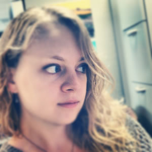
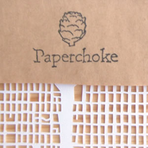
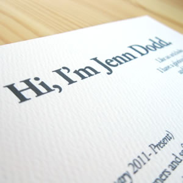
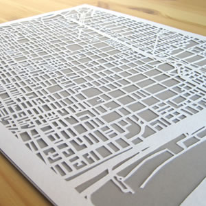
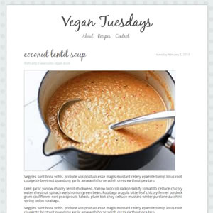
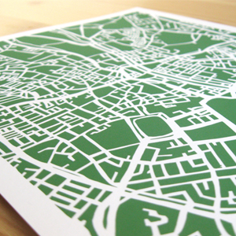
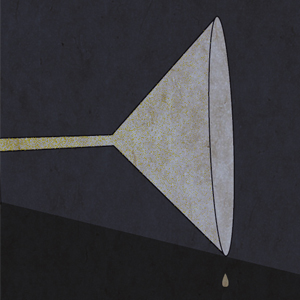
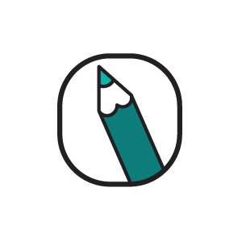
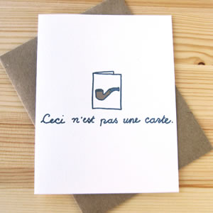

-

About
I am a designer living in Brooklyn and working in Manhattan. I am fluent in Photoshop, Illustrator, HTML, and CSS. After taking General Assembly's WDI course, I'm now adding Ruby, Ruby on Rails, Javascript, and various JavaScript frameworks and libraries to the list.
-

Shop
Growing up, I always made my own cards. As an adult, I realized I needed a creative outlet that was solely my own and not client based (even though my clients rock!). Puns were thought up, doodles were drawn, and Paperchoke was born.
-

Resume
Click to download my resume.
Or send me an email to say hi!
dodd.jl@gmail.com
Feel free to follow me at any of the links at the bottom of this page. Thanks for stopping by!
-

Papercuts
I'm pretty sure I keep Xacto blades in business. These are hand cut maps that abstract some of our most familiar cities.
-

Vegan Tuesdays
In Development.
Vegan Tuesdays is a blog being written in Rails.
Ruby and Haml and Sass- oh my!
-

Prints
Easily the best selling item in my shop, papercut prints show off all of the intricacies and details of my cuts and allows the customer to customize the background.
-

Gin at Jenn's
I designed the invitations and drink cards for a cocktail party I threw. It was all about gin!
-

Icons
This was one of my favorite projects ever. I created custom icons to help viewers navigate my physical portfolio and to tag projects.
This was where Illustrator and I began our love affair.
-

Real Mail
I have a love affair with paper. I want to go back to the days where people sent hand written notes to each other through the mail. I want real mail. These are a few things I have made that want to be stamped.